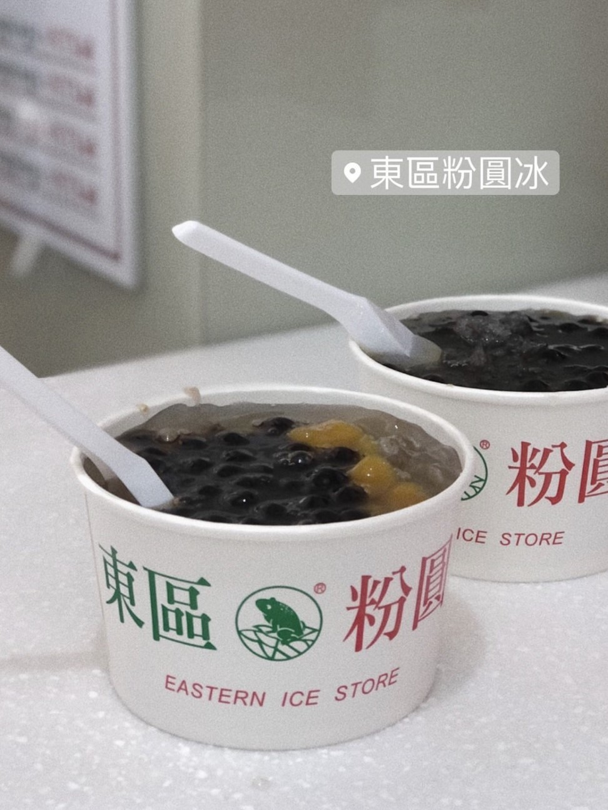
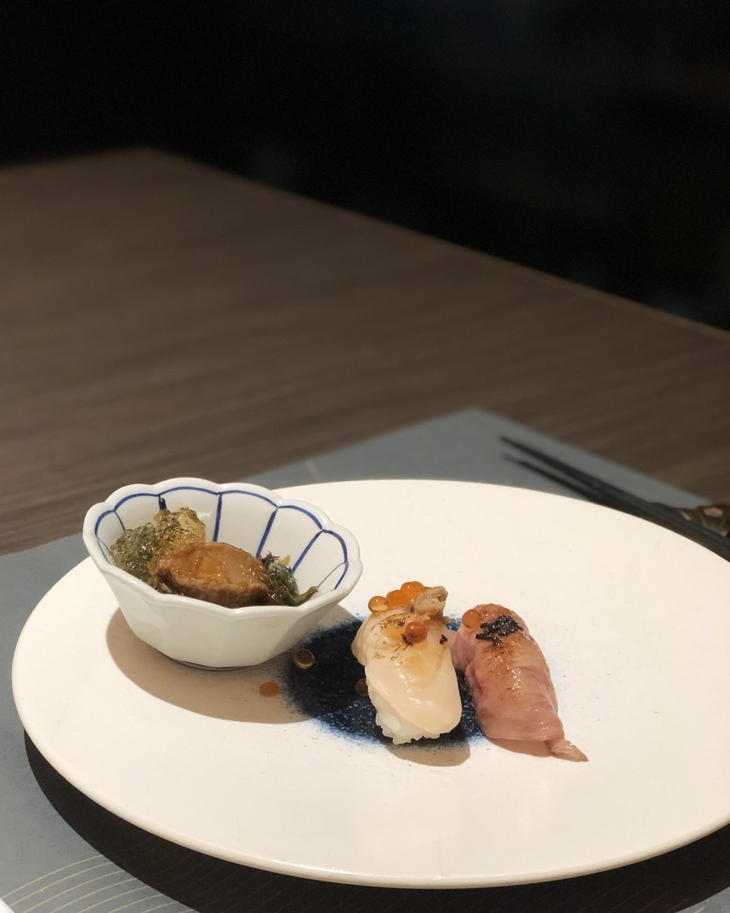
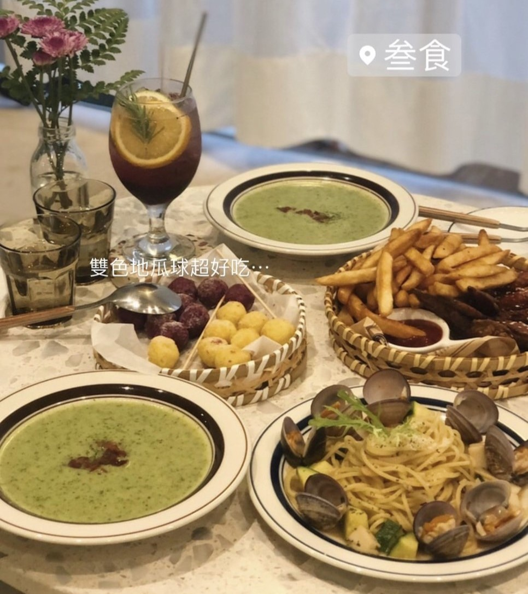
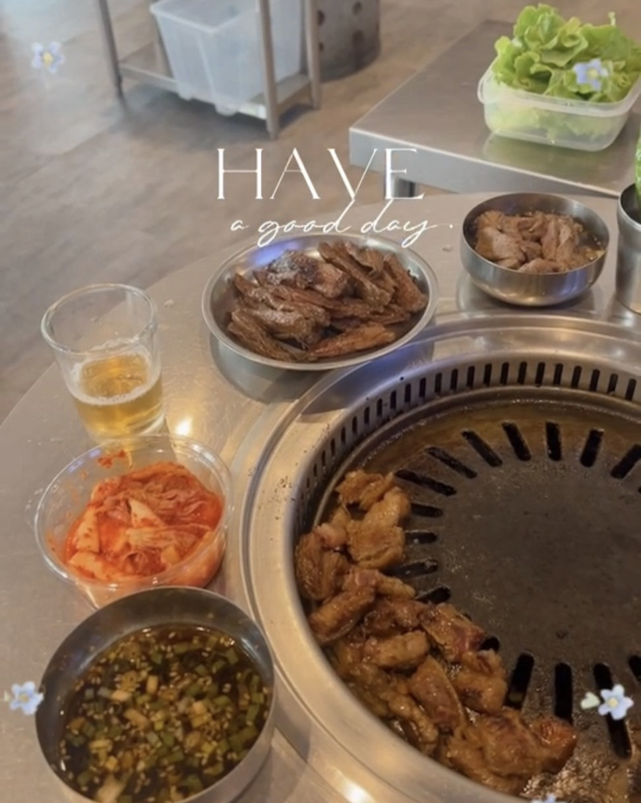

信義區美食
 |
BURGER OUT電話:0227566860地址:台北市信義區忠孝東路四段553巷22弄2號 這家漢堡是我私心推薦的！炸雞漢堡肉多汁之外，漢堡皮超酥脆！ 薯條配上胡椒粉 真的🤤🤤🤤 餐廳位置資訊 |

|
Butcher by LanPengYou電話: 0227320070地址:台北市信義區基隆路二段87號 屠夫漢堡！漢堡排的肉超厚，漢堡皮酥酥脆脆， 配上花生醬，真的停不了嘴巴啊！ 餐廳位置資訊 |

|
Musée Kitchen & Bar電話: 0223450100地址:台北市信義區莊敬路178巷15號 餐點份量足夠～牛排配上獨特醬汁讓我忍不住一口接著一口 細薯的光芒一點都不輸牛排！ 餐廳位置資訊 |
|  |
東區粉圓信義分店電話:0227091068地址:台北市大安區信義路四段258號 和一般的挫冰店不同的是: 東區粉圓冰加有顆粒的冰 吃起來甜而不膩 餐廳位置資訊 |
大師兄銷魂麵舖-信義店電話:0227227125地址:台北市信義區松壽路11號 喜歡牛肉的朋友們可以去品嚐看看🤤 全店賣的只有牛肉 配上銷魂麵 認真銷魂！ 餐廳位置資訊 |
|
永心鳳茶電話:0227233028地址:台北市信義區忠孝東路五段68號 嚐鮮之後發現不得了，這家好吃之外，料超豐富 醃漬番茄超級無敵好吃！珍珠奶茶的茶味偏重，很好喝！ 餐廳位置資訊 |
|
|  |
旭集電話:0287803366地址:台北市信義區松仁路58號信義A13大遠百9樓 日式高級吃到飽餐廳！ 裡面真的滿滿高級的食物，和牛壽司、帝王蟹湯、煎干貝等等 🤤不說了 要流口水了 餐廳位置資訊 |
艾朋牛排餐酒館 À POINT STEAK & BAR電話:0227567788地址:台北市信義區忠孝東路五段139號2樓 不管是慶生 朋友聚餐 或是情侶約會 都很適合來這家餐廳！ CP值還不錯 餐廳位置資訊 |
|
|  |
叁食電話:0227580170地址:台北市信義區仁愛路四段440號 網美餐廳！食物好拍，環境很好！雙色地瓜球真的超好吃！ 餐廳位置資訊 |
珍寶海鮮JUMBO Seafood電話:0227207333地址:台北市信義區松高路12號3F 到了吃螃蟹的季節，珍寶蟹的肉真的超多！ 甜甜辣辣的味道真的讓人停不了一口又一口！ 餐廳位置資訊 |
|
食令shabu電話:02-81017989地址:台北市信義區市府路45號4F 信義高級火鍋！ 湯頭清淡、肉質鮮嫩多汁，最後還能煮粥太喜歡了！ 餐廳位置資訊 |
|
|  |
新村站著吃烤肉電話:02-27665258地址:台北市信義區忠孝東路五段159號 醃過獨特醬汁的燒肉吃起來甜甜的 是和好朋友一起喝燒酒的好地方！ 餐廳位置資訊 |